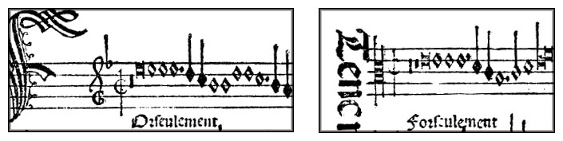
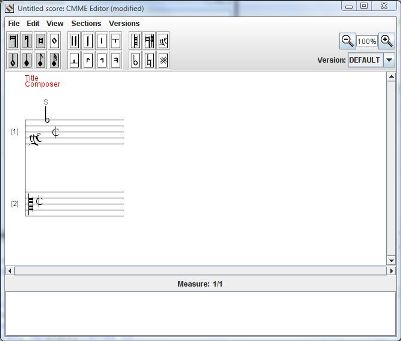
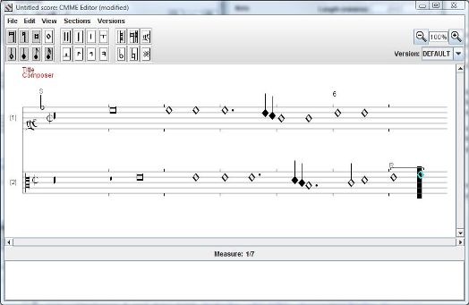
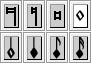
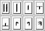
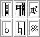
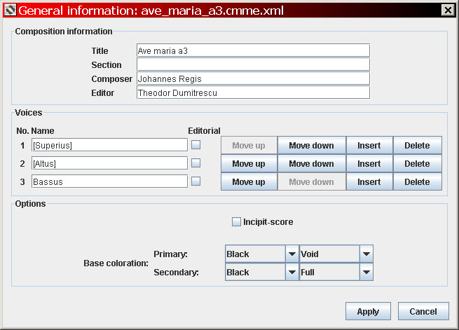
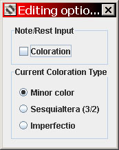
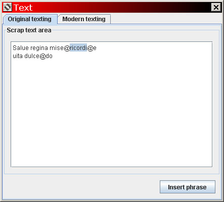
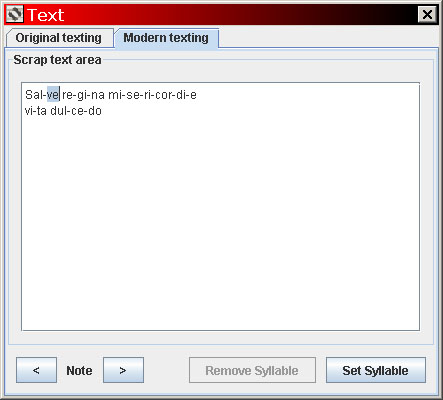

August 2011
Current version: 0.97a (beta)
The CMME Editor software is a graphical tool for creating transcriptions of music written in mensural notation (primarily of the 15th-16th centuries), for use with the CMME online publication system for early music scores. It is a platform-independent Java program which produces music data files in the XML-based CMME format (.cmme.xml), in addition to several graphics formats (PDF documents for full scores/parts, JPEG images of musical incipits). It is NOT a music engraving program, i.e., the software does not provide any sophisticated mechanism for controlling the precise visual form of the transcription (exact placement of noteheads, etc.), since the CMME Viewer software can produce different visualizations of transcriptions according the desires of the end reader. For an introduction to the goals and structure of the CMME Project, see the project website: http://www.cmme.org.
Interface:
Cut/Copy/Paste
Highlight events with Shift-←, Shift-→
Modify event lengths with Ctrl-9, Ctrl-0
Ligature type can be modified when only final note is selected (with R and
O)
Modify vertical position of Barline event with ↑, ↓; modify vertical
length with Shift-↑, Shift-↓
Insert original text phrases with T
Ctrl-R shows Section Attributes window
.88-.97:
[to be completed]
.88:
Basic variant-manipulation functionality
.87:
Section functionality in non-scored views (parts, incipit)
Exclusion of voices for reduced-scoring sections
Plainchant-section editing and rendering
Incipit-scores now use separate sections for Incipit and Finalis
"Notes" area added to score meta-data (General Information)
The current version of the CMME Editor is distributed as a ZIP archive which can be ...
This section provides step-by-step instructions for making a CMME transcription of a short two-voice musical extract from a 16th-century manuscript, as an introduction to using the CMME Editor and dealing with some idiosyncracies of mensural notation transcriptions. More extensive information on available commands and the CMME Editor interface is provided in the Reference section. Note: this manual is not a guide to reading and interpreting mensural notation. It is expected that users of the CMME Editor will already have some familiarity with early notation before beginning their transcriptions. Ted Dumitrescu's basic mensural notation reference sheet lays out the commonly-encountered features of 15th- and 16th-century mensural notation and their interpretation; the best-known introduction to reading early notation is still Willi Apel, The Notation of Polyphonic Music, 900-1600 (Cambridge, MA: Mediaeval Academy of America, 1942).
The two images below contain the incipits of two voices of a chanson (Obrecht's setting of Fors seulement) as printed in Petrucci's collection Canti C (1503-4). This is a very typical example of early 16th-century mensural notation, and the following tutorial will demonstrate how to transcribe these two fragments into a score.

To begin transcribing the music, start the CMME Editor. A blank score containing one voice appears in a new window. Note: It is recommended that you open the image above in a separate window while following this tutorial.
Inputting music: voices, clefs, mensurations
First, begin with the voice on the left (unnamed here, but typically known as
Superius, Discantus, or Cantus). At the left edge of the image is a large
calligraphic-style F which opens the text ("FOrseulement"); the first
musical symbol is the clef, a G on the second staff line from the
bottom, or "G2" clef. Type X to insert a clef, by default a C clef on
the bottom staff line, which then remains highlighted (selected); to transform
this into a G clef, type G. Alternatively, clicking on the G-clef in the
Toolbar above the score will also insert a G2
clef at the current cursor position. Now press the right arrow (→)
to de-select the clef and move the cursor to the right, ready to input new
items.
The item to the right of the G-clef, which looks like a flat on the 5th staff line (F), was a type of clef in the 15th and 16th centuries, the "round b," and this is how it is treated in the CMME system as well. Type X to insert a new clef, then B to transform it into a round b. This clef defaults to the position just below middle C; to move it up to F, press the up arrow (↑) four times. The clef now has the right pitch-letter, but is still an octave too low. Instead of pressing the up arrow repeatedly to move it all the way up, hold down Shift and press ↑ again (Shift-↑). The round b is now in the correct position; press → to de-select the clef and move the cursor to the right.
Type M to insert a mensuration sign, which is by default C and which again remains highlighted. Since the sign in the example above contains a stroke, type / (slash) to add (or remove) the stroke. Then type S to make the sign smaller (small enough to fit between two staff lines, as in the Tenor voice on the right). Now press → to de-select the sign and move the cursor to the right. The clefs and mensuration sign of the first voice have been entered.
Type Ctrl-I to insert a new blank voice into the score, for transcribing the Tenor part (in the righthand image above). Press ↓ to move the cursor down to the new staff. The clef of this staff is C3, so insert it similarly to the first voice: X to insert the clef, then ↑ twice to move it to the third staff line, then → to de-select and move the cursor. Insert the mensuration sign the same way as for the first voice: M, /, S, then ↑ to move the sign up one space, and finally →. There are now two voices with clefs and mensuration signs in the score:

Inputting music: notes and rests
Click back onto the score to the right of the mensuration sign in the top voice
to place the cursor there (or simply use the arrow keys to move the cursor).
The first musical symbol in the top voice is a breve rest. Select breve as the
type of note/rest for input by typing 3 or clicking on the breve in the
toolbar; then type Z to insert a rest of this type. Alternatively,
simply click on the "Brevis rest" symbol on the toolbar to insert this type of
rest at the current cursor position. The rest is one staff space lower than in
the image above, so press ↑ to move the symbol up, then → to
de-select.
The first note is also a breve, so make sure the breve symbol on the toolbar is selected (if it's not, press 3 or click on the breve in the toolbar); then type E (the letter of the note's pitch) and a note appears, but an octave too low. Type Shift-↑ to move it up one octave, then →. The next three notes are semibreves on the same pitch. Select the semibreve sign by pressing 4. Type E to insert another note with pitch E (or simply press the spacebar to insert a note with the same pitch as the last note), this time a semibreve, then →. Insert the next semibreve: E, →. Then type E again to insert the third semibreve E. This note is followed by a dot of addition, so press . (period) to insert the dot and automatically lengthen the semibreve, then → to de-select.
Input the next notes following the same principles:
semiminim D: type 6, D, →
semiminim C: type C, →
semibreve B: type 4, B, →
semibreve B: type B, →
semibreve D: type D, →
semibreve D: type D, →
Inputting the second voice
Press ↓ to move the cursor onto the second staff, or simply click
somewhere on the second staff with the mouse. Now the techniques used to input
the first voice can be applied again for the second voice:
breve rest: type 3, Z, ↑, →
semibreve rest: type 4, Z, ↑, ↑,
→
breve E: type 3, E, →
semibreve E: type 4, E, →
semibreve E: type E, →
semibreve E and dot: type E, ., →
semiminim D: type 6, D, →
semiminim C: type C, →
semibreve B and dot: type B, ., →
minim C: type C, →
semibreve D: type 4, D, →
Now the next two notes form a ligature ("cum opposita proprietate," translating to two semibreves). Input the first semibreve E as usual (E, →). Type F to enter the next semibreve, then while it is still highlighted press L to ligate it to the previous note. The program guesses correctly in this case that it will be a "recta" ligature connection rather than "obliqua," as can be seen in the Event information window while this note is highlighted; the type, however, can be switched to Obliqua if necessary by pressing O (and R to go back to Recta).
There are now two voices with clefs, mensuration signs, notes, and rests:

Text
The original notation of the extract above also contains a small amount of
text, written out as "FOrseulement" in the Superius and "Forseulement" in the
Tenor. The CMME System provides two types of texting transcription: 1)
"Original Texting" which follows the conventions of the 15th/16th centuries,
with words, phrases, and syllables matched sometimes rather loosely to parts of
the music; 2) "Modern Texting" which matches each syllable to a specific note
at which it begins (as in a typical score following modern conventions).
The original text phrase of the Superius is lined up approximately with the first note of the music; click to the left of this note to move the cursor there. Now open the Texting Window by typing Ctrl-T (or opening the Edit Menu and clicking on Text...). The "Original texting" tab is open by default: in this tab, the "Scrap text area" can hold text to be transferred to the score, divided into its original units as in the sources. Click on the Scrap Text Area and type (or copy and paste) FOrseulement. Now while the cursor is still next to that word, click on the "Insert phrase" button and this text phrase will be inserted into the score at the current cursor location. Repeat the process for the phrase of the Tenor: either type Forseulement into the Scrap Text Area on a different line than the Superius text, or simply modify the "FOrseulement" which is already there; then make sure the cursor is somewhere in or next to that phrase in the Scrap Text Area. The Tenor's text appears to be lined up with the first of its rests, and it is possible to position it this way on the CMME score as well: click on the score to the left of the first rest in the Tenor to position the cursor to the left of the rest, then click on the "Insert phrase" button in the Texting Window. (To delete any original text, select the Original Text event in the score and press Delete/Backspace.)
Setting the piece's modern texting is a similar process, except that the text must be explicitly divided into syllables and these can only be attached to specific notes, not placed anywhere on the score. Click on the "Modern texting" tab in the Texting Window and type (or paste) the following text into the Scrap Text Area: Fors seu-le-ment. (This is a modernized version of the text.) Now move the text cursor back to the first syllable ("Fors"), then click onto the score and highlight the first note of the Superius (this can be done by clicking and dragging, or moving the cursor to the left of the note and pressing Shift-→, or moving the cursor to the left of the note and pressing the > button in the Texting Window). When the note is highlighted, the "Set syllable" button in the Texting Window will become enabled; click on it to apply the syllable "Fors" to the highlighted note (the modern text appears in blue under the note). Now the program automatically highlights the next syllable and the next note; click "Set syllable" three more times to place the remaining syllables on the next notes. The process can then be repeated for the Tenor: highlight the first Tenor note, click anywhere in the syllable "Fors" in the Texting Window, then click on "Set syllable" four times to attach the four syllables to the first four notes. At any point, you can skip ahead or back in the score with the ">" and "<" buttons in the Texting Window, and the "Remove syllable" button will remove any text from the currently selected note.
At this point you have transcribed an extract of a polyphonic work using the CMME Editor, and have encountered the basic tools employed for manipulating notes, rests, clefs, mensuration signs, text, etc.
The following two images, extracted from a folio of an English choirbook of c. 1500, present the beginnings of two voices of a polyphonic mass in their original notation. It is an example which includes a number of complexities commonly encountered in mensural notation:
To begin transcribing the music, start the CMME Editor. A blank score containing one voice appears in a new window. Note: It is recommended that you open the image above in a separate window while following this tutorial.
Setting basic coloration and meta-data
In this example, the basic notational color is full black (breves and
semibreves are black and filled in) with full red used for coloration
(semiminims and "colored" notes are red and filled in). Since the default
coloration scheme of the CMME Editor is black void - black full (as in most
sources of polyphony from the mid-15th century onward, sometimes called "white
mensural notation"), the basic coloration scheme needs to be changed for this
example; this can be done with the General
information window. To open this window, select General
information... from the Edit menu, or type Ctrl-G. In the
Options panel next to "Base coloration", select "Black" and "Full" for Primary
and "Red" and "Full" for secondary.
Additionally, the General information window can be used for input of basic meta-data (composition name, section name, editor, etc.) and naming and ordering of voices. These elements will not be used in the present example.
Inputting music: voices, clefs, mensurations
Click on Apply to close the General information window and apply
changes. Before inputting notes, transcribe the clefs and mensuration signs at
the very left of each staff in the original notation, beginning with the top
voice. Type X to insert a C1 clef (C clef on the bottom staff line),
which then remains highlighted (selected); alternatively, clicking on the
C-clef in the Toolbar above the score will also
insert a C clef at the current cursor position. To move the clef to the 5th
line, press the up arrow (↑) four times. Now press the right arrow
(→) to de-select the clef and move the cursor to the right, ready
to input new items. Type M to insert a mensuration sign, which is by
default C and which again remains highlighted. To change the sign to O as in
the notation, type O. Then type S to make the sign smaller, and
press ↑ three times to move it vertically into the highest staff
space. Now press → to de-select the sign and move the cursor to the
right. The clef and mensuration sign of the first voice have been entered.
Type Ctrl-I to insert a new blank voice into the score, for transcribing the part in the second image above. Press ↓ to move the cursor down to the new staff. Insert the clef of this staff the same way as for the first voice (X, then ↑ four times, then → to de-select and move the cursor). Insert the mensuration sign the same way as for the first voice (M, O, S, ↑ three times, →). There are now two voices with clefs and mensuration signs in the score.
Inputting music: notes and rests
The music of the first staff begins with a coloration group lasting six
semibreves (two perfections or measures under O): two red semibreve rests and
two red breves. The notational effect of this type of coloration group is to
make all notes within it imperfect: each of the red breves is worth only two
semibreves, rather than the default three under O. Prepare to enter a
coloration group by opening the Editing options window:
select Display input options from the Edit menu. Change the Current
coloration type to "Imperfectio" to specify that newly-input colored notes
will be part of imperfection groups, rather than, e.g., "minor color" groups.
Now select Coloration in the Note/Rest Input panel to specify
that newly-input notes will be colored by default.
Click back onto the score to the right of the mensuration sign in the top voice to place the cursor there. Type Z to insert a rest of the type currently selected on the Toolbar (semibreve). Type ↑ to move the rest up one space, and → to de-select and move the cursor. Now repeat this for the second rest (Z, →). To input the first red breve, first select the breve as the value for new note input either by clicking on the breve symbol in the Toolbar or by typing 3. Now type the pitch letter of the note: F. The note appears an octave too high (since no other notes have been input, the program chooses the F closest to the clef), so type Shift-↓ to lower the note's pitch by an octave. Now the note is on the correct pitch, and since Imperfection Coloration is turned on, it is automatically imperfected rhythmically, as can be verified by checking its length displayed in the Event information window, 4:1 minimae. Type → to de-select and A to input the next breve on the proper pitch, then → to move the cursor again since this note needs no modification. The first coloration group has now been input.
In the Editing options window, de-select Coloration to stop entering colored notes and click back onto the first staff in the score, to the right of the note just input. Type C to add the third breve; although uncolored, this note is still imperfected by the two minims following it, so type Shift-1 to imperfect it (reducing its length from 6 to 4 minims), then → to de-select. Type 5 to select the minim as the new input value, then F to insert the first minim, Shift-↓ to lower the note's pitch by an octave, then →. Type G to add the second minim, then →. Now three measures have been input, and the following notes employ the same principles:
breve A: type 3, A, Shift-1, →
minim F: type 5, F, →
minim A: type A, →
semibreve G: type 4, G, →
semibreve G: type G, →
semibreve C and dot: type C, ., ↓ ↓(to move the
dot down one space), →
minim C: type C, →
semibreve B: type 4, , →
Ligature, minor color, "accidental"
Now two ligated semibreves appear in the music. Enter the first one like a
normal semibreve: type G, →. Now prepare to enter the "minor
coloration" pair by clicking on Minor color in the Editing
options window, and click back onto the score to the right of the last note
entered. Enter the second semibreve of the ligature: type A, then
I to make it colored, then L to ligate it to the previous note,
and → to de-select. Now enter the colored minim which completes the
minor color pair: type 5, B, I, →.
The next item to the right of the red minim is a lightly-written dyesis sign (#) on the pitch F. This is technically a type of clef, and that is how the CMME system treats it. Type X to enter a new clef, by default a repetition of the current main clef (C5), then X again to transform it into a dyesis sign; alternatively, clicking on the dyesis symbol in the Toolbar will insert the sign at the current cursor position. The sign appears on the pitch B, so type ↓ three times to move it down to F, then →. Now add several more notes:
semibreve A and dot: type 4, A, ., ↓,
→
minim F#: type F, =, →
semibreve F#: type 4, F, =, →
semibreve A (ligated): type A, L, →
The transcription now contains much of the first line in the image.
Inputting the second voice
Press ↓ to move the cursor onto the second staff, or simply click
somewhere on the second staff with the mouse. Now the techniques used to input
the first voice can be applied again for the second voice:
semibreve rest: type 4, Z, ↑, →
breve F: type 3, F, Shift-↓,
Shift-1, →
semibreve A: type 4, A, →
breve C: type 3, C, Shift-1, →
semibreve A: type 4, A, →
minim rest: type 5, Z, ↑, →
minim F: type F, →
minim A: type A, →
minim B: type B, →
minim C: type C, →
semibreve D: type 4, D, →
minim C: type 5, C, →
minim A: type A, →
semibreve C with dot: type 4, C, ., ↓,
→
semibreve G: type 4, G, →
breve A: type 3, A, Shift-1, →
semibreve G: type 4, G, →
semibreve G: G, →
semibreve D with dot: type D, Shift-↑, .,
→
minim D: type D, / (to reverse stem direction), →
semibreve D: type 4, D, →
semibreve D with dot: type D, ., →
semiminim C: type 6, C, →
semiminim B: B, →
semibreve A: type 4, A, →
Most musical passages from the 16th century will be considerably more straightforward notationally than the preceding example. It has been chosen specifically to illustrate a range of issues which arise occasionally in mensural notation even into the late 16th century, and which are considerably more common in music from the earlier 15th century. When you are comfortable transcribing a passage like this one with the CMME Editor, the majority of of 15th- and 16th-century scores should pose few problems.
TBC
TBC
TBC
TBC
Quick start:
| Key | Action |
| Ctrl-Shift-Delete | Delete reading at cursor location |
| Ctrl-1 | Mark reading at cursor location as error |
| Ctrl-. / Right-click | Display all readings at location of cursor/click |
| V | Combine reading at cursor location with following (adjacent) reading |
| Key | Action |
| Ctrl-A | Highlight all events in the current voice in the current section |
| Ctrl-E | Open editing options window |
| Ctrl-G | Open general score information window |
| Ctrl-I | Insert new voice |
| Ctrl-N | Create new score |
| Ctrl-O | Open file |
| Ctrl-P | Temporarily disabled |
| Ctrl-Q | Quit |
| Ctrl-R | Open section attributes window |
| Ctrl-S | Save file |
| Ctrl-T | Open texting window |
| Ctrl-W | Close file |
| Ctrl--, Ctrl-= | Zoom out/in |
| Key | Action |
| Arrows (↑,↓,←,→) | Move cursor |
| Shift-←,→ | Select events/lengthen/shorten highlight |
| Home | Move cursor to beginning of section |
| End | Move cursor to end of section |
| Backspace | Delete item to left of cursor |
| Delete | Delete item to right of cursor |
| A, B, C, D, E, F, G | Insert note with currently selected type/length |
| Z | Insert rest with currently selected type/length |
| Space | Insert note with currently selected type/length and same pitch as previous note in melody |
| K | Insert modern key signature change |
| L | Insert coloration change |
| M | Insert mensuration sign/change |
| N | Insert textual annotation |
| P | Insert proportion |
| T | Insert original text phrase |
| X | Insert clef |
| . | Insert dot of addition (lengthening note to left of cursor) |
| , | Insert dot of division/etc. |
| ; | Insert custos on same pitch as previous note in melody |
| / | Insert source line ending, along with custos and new clefs |
| ] | Insert barline |
| 1, 2, 3, 4, 5, 6, 7, 8 | Select note type/length for note input (1 = maxima, 8 = semifusa) |
| Shift-I | Toggle coloration on/off for note input |
| Shift-6 | Toggle semiminima style for note input (colored or void with flag) |
| Shift-\ | Toggle stem direction for note input (always up; always down; dependent upon staff position) |
| Ctrl-L | Insert lacuna |
| Item type: any | |
| Key | Action |
| ←,→ | Unhighlight and move cursor to left or right of item |
| Home | Unhighlight and move cursor to beginning of section |
| End | Unhighlight and move cursor to end of section |
| Backspace, Delete | Delete item |
| Ctrl-D | Mark item as editorial |
| Ctrl-L | Replace item with Lacuna of equivalent length |
| Item type: Note | |
| Key | Action |
| ↑,↓ | Change pitch (move up or down one step) |
| Shift-↑,↓ | Change pitch (move up or down one octave) |
| A, B, C, D, E, F, G | Change pitch (move to closest pitch with lettername typed) |
| 1, 2, 3, 4, 5, 6, 7, 8 | Change type/length (1 = maxima, 8 = semifusa) |
| Ctrl-9, 0 | Shorten or lengthen by 1 minima |
| I | Toggle coloration |
| L | Ligate with previous note |
| O | Change ligature segment type (beginning on this note) to obliqua |
| P | If editorial accidental is present, toggle parentheses (optional status) |
| R | Change ligature segment type (beginning on this note) to recta |
| S | Toggle presence of signum congruentiae |
| U | If signum congruentiae is present, toggle direction (up/down, above/below note) |
| [, ] | If signum congruentiae is present, move up/down ([ = up, ] = down) |
| ; | If signum congruentiae is present, cycle horizontal position (left; center; right) |
| . | Insert dot of addition after note (and lengthen note) |
| / | Cycle stem direction |
| = | Add editorial sharp |
| - | Add editorial flat |
| * | Toggle presence of corona |
| Shift-I | Cycle half-coloration pattern (only for brevis and longer) |
| Shift-1 | Apply imperfection to note |
| Shift-2 | Apply alteration to note |
| Shift-3 | Apply perfection to note |
| 0, M | Make multi-event (align vertically with previous item) |
| Item type: Rest | |
| Key | Action |
| ↑,↓ | Change staff position (move up or down one step) |
| 1, 2, 3, 4, 5, 6, 7, 8 | Change type/length (1 = maxima, 8 = semifusa) |
| Ctrl-9, 0 | Shorten or lengthen by 1 minima |
| I | Toggle coloration |
| S | Toggle presence of signum congruentiae |
| U | If signum congruentiae is present, toggle direction (up/down, above/below rest) |
| [, ] | If signum congruentiae is present, move up/down ([ = up, ] = down) |
| ; | If signum congruentiae is present, cycle horizontal position (left; center; right) |
| * | Toggle presence of corona |
| 0, M | Make multi-event (align vertically with previous item) |
| Item type: Clef | |
| Key | Action |
| ↑,↓ | Change staff position (move up or down one line/step) |
| B | Change type to round b clef; change style of round b clef |
| C | Change type to C clef |
| F | Change type to F clef; change style of F clef |
| G | Change type to G clef |
| H | Change type to square b clef |
| I | Toggle coloration |
| S | If a less-principal clef (round b, square b, dyesis), toggle signature status |
| X | Change type to dyesis (#) |
| 0, M | Make multi-event (align vertically with previous item) |
| Item type: Mensuration | |
| Key | Action |
| ↑,↓ | Change staff position (move up or down one step) |
| C | Change main sign to C |
| O | Change main sign to O |
| R | Change main sign to reversed C |
| S | Toggle size (small, large) |
| . | Toggle presence of dot |
| / | Toggle presence of stroke |
| 0, M | Make multi-event (align vertically with previous item) |
| Item type: Dot | |
| Key | Action |
| ↑,↓ | Change staff position (move up or down one space) |
| Item type: Custos | |
| Key | Action |
| ↑,↓ | Change staff position (move up or down one step) |
| Shift-↑,↓ | Change staff position (move up or down one octave) |
| Item type: Line end | |
| Key | Action |
| P | Toggle page end status |
| Item type: Barline | |
| Key | Action |
| ↑,↓ | Move up or down vertically |
| Shift-↑,↓ | Lengthen or shorten vertically |
| 1, 2, 3, 4, 5, 6, 7, 8 | Change number of lines |
| R | Toggle repeat-sign status |
| Item type: Textual annotation | |
| Key | Action |
| ↑,↓ | Move up or down vertically |
| Item type: Modern key signature | |
| Key | Action |
| - | Move signature flatward (add one flat or remove one sharp) |
| = | Move signature sharpward (add one sharp or remove one flat) |
| Item type: Multi-event | |
| Key | Action |
| Ctrl-←, Ctrl-→ | Shift highlight between individual items |
| Key | Action |
| ←,→ | Unhighlight and move cursor to left or right of highlighted area |
| Home | Unhighlight and move cursor to beginning of section |
| End | Unhighlight and move cursor to end of section |
| Backspace, Delete | Delete highlighted items |
| I | Toggle coloration |
| L | Ligate or un-ligated highlighted notes |
| O | If first highlighted item is note, change ligation type to obliqua |
| R | If first highlighted item is note, change ligation type to recta |
| / | Change stem directions of highlighted notes |
| ↑,↓ | Move items up or down vertically, transposing notes and clefs |
| Ctrl-D | Mark items as editorial |
| Ctrl-L | Replace items with Lacuna of equivalent length |
| File | |
| Command | Action |
| New | Create empty score in new window |
| Open | Open score file in new window |
| Save | Save file |
| Save as | Specify filename and save |
| Generate PDF | Temporarily disabled; use CMME Viewer for PDF generation |
| Close | Close window |
| Exit | Quit program |
| Edit | |
| Command | Action |
| General information | Open general score information editor window |
| Text | Open texting editor window |
| Display input options | Open input options window |
| View | |
| Command | Action |
| View size | Change view size: zoom in, zoom out, select view size |
| View parts window | Open window with unscored separate parts |
| Print preview | Open window with print/PDF layout (in separate parts) |
| Sections | |
| Command | Action |
| Insert new section | Temporarily disabled |
| Insert section break | Split section at current cursor location |
| Items | Name | Action |
|  | Note values | Selects note type for future input |
|  | Rest values | Inserts rest (of selected type) into score at current cursor position |
|  | Clef types | Inserts clef (of selected type) into score at current cursor position |
| View size tool | Changes view size: zoom in and out with magnifying glass, or type size into text field |
Automatically displayed whenever a new score is open, the Event information window offers information and controls for whichever event is currently highlighted in the score. Note: In the current version of the CMME Editor, not all event types have been implemented yet in the Event information window; for most events, keyboard commands are the preferred method of manipulation. At the top of the panel, the Type of the currently highlighted item is displayed. If the currently highlighted item has a musical length (Note/Rest/Lacuna), the two numerical fields in the upper right are enabled and allow arbitrary manipulation of the event's length, using a minima-based timing system. The ratio 1:1 represents one minima, 2:1 is two minimae, 3:2 is one and a half minimae, etc. In most cases, manual manipulation of note- and rest-lengths is unnecessary, but it can be useful for unusual forms of imperfection and complex mensural situations.
Individual event controls:
Mensuration
The Sign panel controls the appearance of the mensuration sign, allowing
arbitrary addition and deletion of signs and numbers as well as control over
sign attributes (dot, stroke, reversal). The white field at the top of the
Sign panel shows all elements within the highlighted mensuration sign;
to modify or delete an individual element, click on it within this field and it
will become highlighted. The Mensuration information panel allows
arbitrary control over mensural effect (setting which mensural levels are
binary and ternary), regardless of the visual appearance of the sign.
Proportion
The numerical fields at the upper right of the window allow specification of
the proportion, represented as a ratio of the left and right numbers.
Coloration change
The selection lists for Primary and Secondary coloration types operate as in
the Base coloration selection in the General
information window.
Textual annotation
The text field allows input of text to be placed on the score. Clicking outside
the text field will update the score window with the new text.

The Composition information panel contains text fields for entering basic meta-data: Title, Section (e.g., "Kyrie"), Composer, etc.
Each row in the Voices panel contains controls for manipulating information about one voice in the score: enter the voice name in the Name text area, select Editorial if the voice is an editorial reconstruction, use Move up and Move down to change voice positions within the list, and Insert and Delete to add and remove voices.
In the Options panel, select Incipit-score if this is an incipit file rather than a full transcription. For choosing the base coloration style of the score, each base coloration type has a color (Black, Red, etc.) and a style (Void or Full); the Primary coloration is the color used by normal maximae, longae, breves, semibreves, and minimae, while the Secondary coloration is used by normal semiminimae, fusae, and semifusae, and by "colored" breves, semibreves, etc.
Apply makes changes and closes the dialog; Cancel closes the dialog without applying changes.

The Coloration checkbox controls whether new notes (not yet added to the score) are colored or not. Current Coloration Type specifies the effect of coloration on the length of new notes: Minor color turns coloration groups (usually two notes) into dotted rhythmic patterns; Sesquialtera makes notes worth 2/3 their normal value; Imperfectio makes ternary note values always imperfect (and has no effect on binary note values).

In the Original texting tab, the Scrap text area can hold text which is to be inserted into the score as phrases of original text (i.e., aligned phrase by phrase with music phrases roughly as transmitted in the sources, rather than aligned syllable-to-note as in a modern score). Text phrases in the scrap area are separated by the character @ and by line breaks. Insert phrase takes the text phrase where the cursor currently is and inserts it into the score (as an OriginalText event) wherever the cursor currently is in the score window. The next text phrase is then automatically highlighted.

In the Modern texting tab, the Scrap text area can hold text which is to be attached to notes, syllable by syllable. Syllables in the text area are separated by dashes (-) and by line breaks. If a single note is currently highlighted in the score window, the Set Syllable button is enabled and can attach one syllable in the text area (wherever the cursor currently is) to the highlighted note. The next note and next text syllable are then automatically highlighted. If the currently highlighted note already has a syllable, the Remove Syllable button is enabled and can remove the syllable from the highlighted note. The arrows (< and >) on either side of the Note label highlight the note either before or after the current cursor position in the score window.
Currently in the CMME Editor, the Print preview window always shows unscored music in separate parts (the CMME Viewer contains a Print Preview feature with score layout). For incipit scores, the Print preview window contains a Generate image file... button which can be used for saving a JPEG image containing all voices.